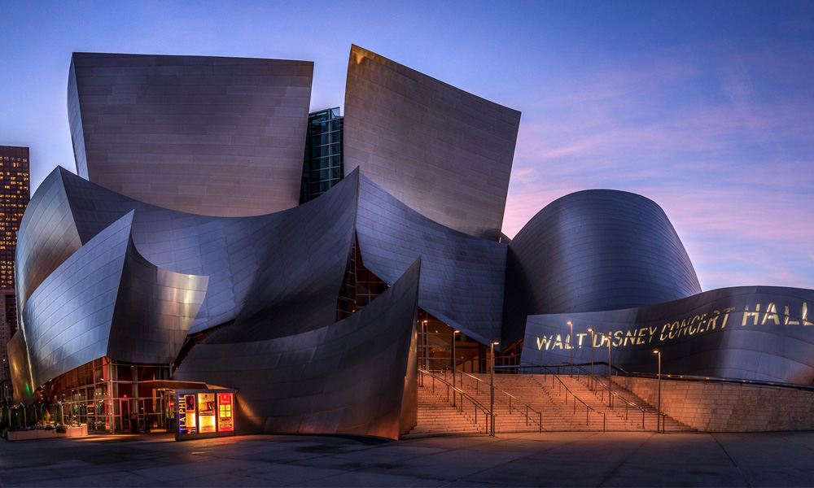

El escritor peruano Mario Vargas Llosa es el ganador del Premio Nobel de Literatura 2010, por su "cartografía de las estructuras del poder y aceradas imágenes de la resistencia, la rebelión y la derrota del individuo", anunció a primera hora de hoy Peter Englud, secretario de la Academia Sueca. Vargas Llosa es el primer autor de habla hispana premiado en los últimos veinte años, desde que en 1990 el galardón recayera en el mexicano Octavio Paz, un año después que el español Camilo José Cela.
El autor de "La ciudad de los perros", nacido en 1936 en Arequipa (Perú) y que también tiene la nacionalidad española, en las quinielas de los favoritos de los Nobel desde hacía años, es el primer escritor latinoamericano ganador del Nobel de Literatura desde el mexicano Octavio Paz, en 1990.
"Se había levantado a las cinco de la mañana para presentar una clase, cuando recibió nuestra llamada a las siete menos cuarto, mientras trabajaba intensamente", dijo Englund. Vargas Llosa acudirá a la ceremonia de entrega del galardón el 10 de diciembre, en Estocolmo, y de acuerdo a la tradición de los galardones será el encargado de pronunciar el discurso en nombre de todos los premiados, a excepción del de la Paz, que se celebra en un acto paralelo, en Oslo. Nobel de Literatura está dotado con 10 millones de coronas suecas (1,1 millones de euros o 1,5 millones de dólares) y, como el resto de estos premios, se entrega el 10 de diciembre, coincidiendo con el aniversario de la muerte de su fundador, Alfred Nobel.
El Concert Hall, donde se realizó la solemne ceremonia, estuvo adornado con flores rojas, procedentes de la provincia italiana de San Remo, lugar donde falleció Alfred Nobel
